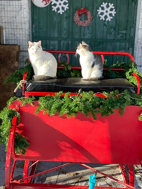

All about
Santa Days
Santa Days


Santa has arrived and his sleigh will be hitched every weekend. He's here for November 26th plus December 20 through to the 22nd. His Outdoor Workshop is where you can find him at Woolley Wonderland Farm. Lots of fresh air and Santa Magic. Please read on for details about your time at Santa Days.
Our Elves would have been in touch with you prior to your visit to remind Santa of some of the adventures that your kiddo has experienced in 2021. (Watch for that email!)
Santa even will share stories of his naughty Elf on the Shelf and ask about YOURS by name! (We try to wow the kiddos with the little details to keep the wonder and magic of Santa alive. If there is a parent-wish we can help with, from keeping the teeth brushed, sharing toys or eating the crusts on the bread, just let us know in our pre-visit form and Santa can encourage with a Ho Ho Ho!) Antique tools are on his workbench and make a great conversation area for candid photos and chat time. There are trees, a fireplace and his Naughty-Nice book as well as the magic key he uses to enter houses without chimneys. His many cats may pop in for a visit too.
Santa will have a small gift (no candy canes or cookies) for every child at the end of your time with him.
Photos with each child, with parents and grands, in as many combinations as you wish can be takenwith your own camera! with your own camera!
Capture all the video and photos you like as part of your Santa Days fee. Consider selecting all 10 spots for exclusivity of your family. If your group is 5 people or more - the $75 group fee is allows you to book up to 10 people for your Santa Day experience. We do allow singles and families to fill each 10-person time slot.
Ease the stress of getting the perfect shot by booking our professional photographer. She'll be in the Workshop zone for your 20 minutes with Santa. For the extra $75 sitting fee, you'll get 10 edited, digital photos through the photographers' website by the Wednesday after your visit. Additional shots can be purchased too. They'll be capturing posed and candid moments of your time with Santa. Again, you do NOT have to book the services of our photographer in order to have Santa photos. You are welcome to bring your own camera or use your phone camera.
Our Elves would have been in touch with you prior to your visit to remind Santa of some of the adventures that your kiddo has experienced in 2021.
He even will share stories of his naughty Elf on the Shelf and ask about YOURS by name! (We try to wow the kiddos with the little details to keep the wonder and magic of Santa alive. If there is a parent-wish we can help with, from keeping the teeth brushed, sharing toys or eating the crusts on the bread, just let us know in our pre-visit form and Santa can encourage with a Ho Ho Ho!)
Santa will have a small gift (no candy canes or cookies) for every child at the end of your time with him.
Photos with each child, with parents and grands, in as many combinations as you wish can be taken. Capture all the video and photos you like as part of your Santa Days fee. We have amazing professional photographers on site over Santa Days. For a$75 fee, you'll get edited, digital photos through the photographers' website by the Wednesday after your shoot. Additional shots can be purchased too. They'll be capturing posed and candid moments of your time with Santa. You don't need to participate but you must book in advance - at time of reserving your Santa Days appointment.
Alley Dunn Photography is on site: November 13, 14, 21 and December 11 and 12
Barb Tryon Photography is on site: November 20, 27, 28 and December 4, 5, 18, to 22
Your family group will take turns going around our favourite field with one of Santa's specially trained Equine Elves leading the way. Two adults, or three small kiddos or any combination can go for a ride each time around. Photos with your entire group can be staged at the beginning or end of your time at the sleigh. Enjoy these 20 minutes and breathe in the fresh winter air. It's quiet at the farm and you can distinguish bird calls in the distance. We'll have holiday tunes playing during the sleigh ride to make it a magical time.
 We hope your toes become toasty as you snuggle close to the bonfire, we have burning for you.
Purchase a delicious cup of hot chocolate for $3 ($2.66 plus HST) to enjoy as you warm your body parts as your visit winds down. Enjoy some chat time with your family and sit to relax for your 20-minute last stop. Feel free to leave when you are done. Wrap-up your time with us with final hand sanitizing and potty stop before getting ready for the ride home.
We hope your toes become toasty as you snuggle close to the bonfire, we have burning for you.
Purchase a delicious cup of hot chocolate for $3 ($2.66 plus HST) to enjoy as you warm your body parts as your visit winds down. Enjoy some chat time with your family and sit to relax for your 20-minute last stop. Feel free to leave when you are done. Wrap-up your time with us with final hand sanitizing and potty stop before getting ready for the ride home.
 We plan all year long (just like Santa) to make this a fun, family adventure to kick off the Christmas season. If you want great Santa photos for grandparents, annual Christmas card or family newsletter, be sure to book a November session for timely distribution of prints.
We aim for a quality and magical experience and hope you'll be back with us next year. If we do our Elfing well, you'll share your experience with friends. We thank you so much for your patronage and for spreading the news about our Farm Days this winter.
Consider coming back after the holidays for our Frozen Too Snowy Adventures Click Here for news on the arrival of Queen Elsa, Wandering Oken, Kristoff and Olaf. It's another 80 minutes of wintery fun with outdoor activities, your FROZEN friends and a sleigh ride in the snow. Farm animals will be back for you to meet and greet. It's family fun FROZEN-style at Woolley Wonderland Farm.
We plan all year long (just like Santa) to make this a fun, family adventure to kick off the Christmas season. If you want great Santa photos for grandparents, annual Christmas card or family newsletter, be sure to book a November session for timely distribution of prints.
We aim for a quality and magical experience and hope you'll be back with us next year. If we do our Elfing well, you'll share your experience with friends. We thank you so much for your patronage and for spreading the news about our Farm Days this winter.
Consider coming back after the holidays for our Frozen Too Snowy Adventures Click Here for news on the arrival of Queen Elsa, Wandering Oken, Kristoff and Olaf. It's another 80 minutes of wintery fun with outdoor activities, your FROZEN friends and a sleigh ride in the snow. Farm animals will be back for you to meet and greet. It's family fun FROZEN-style at Woolley Wonderland Farm.
You can book your hot chocolate in advance in order to save digging for coins on the day of your visit. ($3 per cup includes HST)
Spend 80 minutes in the wintery outdoors with four Christmas zones (We estimate 20 minutes per zone). Click Here to booking and look under EVENTS @ Woolley Wonderland
Be sure you select the correct date and time when booking online. There are no refunds or changes so please book carefully. You will get directions, protocols, and other information by email after you book. Watch your "junk mail".

Santa Chat Time
We know the kiddos will want to begin by meeting Santa. He's a patient guy who knows some children are shy and has ways to get a smile to peek through.Our Elves would have been in touch with you prior to your visit to remind Santa of some of the adventures that your kiddo has experienced in 2021. (Watch for that email!)
Santa even will share stories of his naughty Elf on the Shelf and ask about YOURS by name! (We try to wow the kiddos with the little details to keep the wonder and magic of Santa alive. If there is a parent-wish we can help with, from keeping the teeth brushed, sharing toys or eating the crusts on the bread, just let us know in our pre-visit form and Santa can encourage with a Ho Ho Ho!) Antique tools are on his workbench and make a great conversation area for candid photos and chat time. There are trees, a fireplace and his Naughty-Nice book as well as the magic key he uses to enter houses without chimneys. His many cats may pop in for a visit too.
Santa will have a small gift (no candy canes or cookies) for every child at the end of your time with him.
Photos with each child, with parents and grands, in as many combinations as you wish can be takenwith your own camera! with your own camera!
Capture all the video and photos you like as part of your Santa Days fee. Consider selecting all 10 spots for exclusivity of your family. If your group is 5 people or more - the $75 group fee is allows you to book up to 10 people for your Santa Day experience. We do allow singles and families to fill each 10-person time slot.
Ease the stress of getting the perfect shot by booking our professional photographer. She'll be in the Workshop zone for your 20 minutes with Santa. For the extra $75 sitting fee, you'll get 10 edited, digital photos through the photographers' website by the Wednesday after your visit. Additional shots can be purchased too. They'll be capturing posed and candid moments of your time with Santa. Again, you do NOT have to book the services of our photographer in order to have Santa photos. You are welcome to bring your own camera or use your phone camera.
Santa Days @ the farm
His sleigh will be hitched up for early arrival on November 12th for a special VIP Day and Santa has promised to return every weekend through to December 22nd. His Outdoor Workshop is where you can find him at Woolley Wonderland Farm.Dress for the outdoors!
Bundle up with snow pants, coats, boots, mittens and hats to keep you warm as you wander from station to zone at Woolley Wonderland Farm. The workshop is sheltered with windbreaks to make your time chatting with Santa a comfortable experience. His big chair by the fireplace is welcoming for conversations with that jolly old elf. Christmas trees and holiday decorations will twinkle and sparkle with music playing Santa's favourite songs.Santa Chat Time!
We know the kiddos will want to begin by meeting Santa. He's a patient guy who knows some children are shy and has ways to get a smile to peek through.Our Elves would have been in touch with you prior to your visit to remind Santa of some of the adventures that your kiddo has experienced in 2021.
He even will share stories of his naughty Elf on the Shelf and ask about YOURS by name! (We try to wow the kiddos with the little details to keep the wonder and magic of Santa alive. If there is a parent-wish we can help with, from keeping the teeth brushed, sharing toys or eating the crusts on the bread, just let us know in our pre-visit form and Santa can encourage with a Ho Ho Ho!)
Santa will have a small gift (no candy canes or cookies) for every child at the end of your time with him.
Photos with each child, with parents and grands, in as many combinations as you wish can be taken. Capture all the video and photos you like as part of your Santa Days fee. We have amazing professional photographers on site over Santa Days. For a$75 fee, you'll get edited, digital photos through the photographers' website by the Wednesday after your shoot. Additional shots can be purchased too. They'll be capturing posed and candid moments of your time with Santa. You don't need to participate but you must book in advance - at time of reserving your Santa Days appointment.
Alley Dunn Photography is on site: November 13, 14, 21 and December 11 and 12
Barb Tryon Photography is on site: November 20, 27, 28 and December 4, 5, 18, to 22
Elf Escort to Critters
Santa loves the farm friends and will have the Head Critter Elf to introduce you to his winter friends. Shaggy ponies and donkeys, woolly sheep and long-coated goats will snuggle up to your family as they meet and greet. Funky chickens and crested ducks with warm feathers wander in the pen too. Jumbo rabbits hop about and some of the animals will have their fancy Christmas costumes on. Everyone can take photos and enjoy spending time right in the pen with the miniature farm friends.Sleigh Ride Time
While we can't guarantee the arrival of snow, we have options to make this session fun. If the ground isn't white, our elf will have his pony cart prepared and decorated for the season. When the snow is on the ground, the one-reindeer-open-sleigh will be waiting for your group. (It's really a pony with special antlers.)Your family group will take turns going around our favourite field with one of Santa's specially trained Equine Elves leading the way. Two adults, or three small kiddos or any combination can go for a ride each time around. Photos with your entire group can be staged at the beginning or end of your time at the sleigh. Enjoy these 20 minutes and breathe in the fresh winter air. It's quiet at the farm and you can distinguish bird calls in the distance. We'll have holiday tunes playing during the sleigh ride to make it a magical time.
Roasting On An Open Fire
We hope your toes become toasty as you snuggle close to the bonfire, we have burning for you.
Purchase a delicious cup of hot chocolate for $3 ($2.66 plus HST) to enjoy as you warm your body parts as your visit winds down. Enjoy some chat time with your family and sit to relax for your 20-minute last stop. Feel free to leave when you are done. Wrap-up your time with us with final hand sanitizing and potty stop before getting ready for the ride home.Four Zones of Christmas Fun
We plan all year long (just like Santa) to make this a fun, family adventure to kick off the Christmas season. If you want great Santa photos for grandparents, annual Christmas card or family newsletter, be sure to book a November session for timely distribution of prints.
We aim for a quality and magical experience and hope you'll be back with us next year. If we do our Elfing well, you'll share your experience with friends. We thank you so much for your patronage and for spreading the news about our Farm Days this winter.
Consider coming back after the holidays for our Frozen Too Snowy Adventures Click Here for news on the arrival of Queen Elsa, Wandering Oken, Kristoff and Olaf. It's another 80 minutes of wintery fun with outdoor activities, your FROZEN friends and a sleigh ride in the snow. Farm animals will be back for you to meet and greet. It's family fun FROZEN-style at Woolley Wonderland Farm.
Fees
 Admission to Santa Days is $16 per person (infant in arms, unable to walk are free), $50 per family of four or $75 for your group of up to ten people. We are permitting the mixing of groups this year. Individuals and families of 4 may have others joining them for the tour. If you are considering booking our professional photographer ($75 additional), you may want to reserve the entire time slot (for the full 10 people) so you are the only ones with Santa, and the rest of your time at the farm.You can book your hot chocolate in advance in order to save digging for coins on the day of your visit. ($3 per cup includes HST)
Spend 80 minutes in the wintery outdoors with four Christmas zones (We estimate 20 minutes per zone). Click Here to booking and look under EVENTS @ Woolley Wonderland
Be sure you select the correct date and time when booking online. There are no refunds or changes so please book carefully. You will get directions, protocols, and other information by email after you book. Watch your "junk mail".
Arrival Protocols
Woolley Wonderland Farm in Lakehurst, Ontario. We are 40 Minutes North of Peterborough, 90 minutes from the top of Toronto, 10 minutes West of Buckhorn. You will get full directions upon booking along with protocols for health and safety. Please arrive at least 5 minutes early and follow the arrows to our parking area near the porta-potty (for your freshening up convenience and hand sanitizing). You'll be greeted by an Elf who will verify your booking, review Covid screening questions and check for masks. (All guests over the age of 5 must wear a mask). We will get you oriented and lead your group to meet Santa right away. This is an any-weather, outdoor adventurePlease: Dress for the weather
© Critter Visits of Woolley Wonderland Farm Inc. 2020